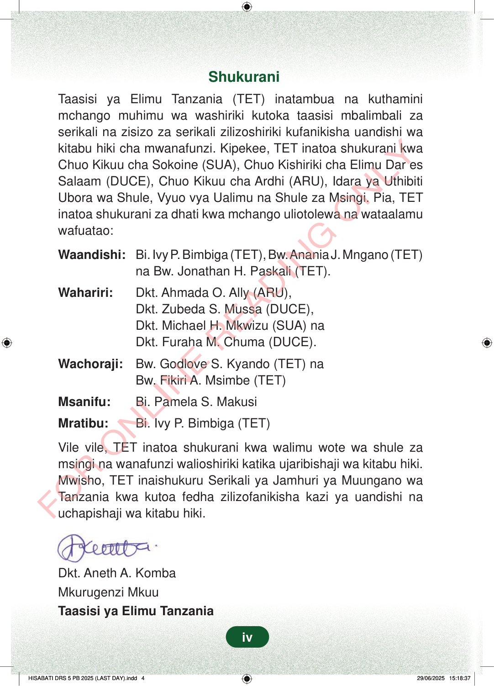

ShukuraniTaasisi ya Elimu Tanzania (TET) inatambua na kuthaminimchango muhimu wa washiriki kutoka taasisi mbalimbali zaserikali na zisizo za serikali zilizoshiriki kufanikisha uandishi wakitabu hiki cha mwanafunzi. Kipekee, TET inatoa shukurani kwaChuo Kikuu cha Sokoine (SUA), Chuo Kishiriki cha Elimu Dar esSalaam (DUCE), Chuo Kikuu cha Ardhi (ARU), Idara ya UthibitiUbora wa Shule, Vyuo vya Ualimu na Shule za Msingi. Pia, TETinatoa shukurani za dhati kwa mchango uliotolewa na wataalamuwafuatao:Waandishi:Bi. Ivy P. Bimbiga (TET), Bw. Anania J. Mngano (TET)na Bw. Jonathan H. Paskali (TET).Wahariri:Dkt. Ahmada O. Ally (ARU),Dkt. Zubeda S. Mussa (DUCE),Dkt. Michael H. Mkwizu (SUA) naDkt. Furaha M. Chuma (DUCE).Wachoraji:Bw.Godlove S. Kyando (TET) naBw. Fikiri A. Msimbe (TET)Msanifu:Bi. Pamela S. MakusiMratibu:Bi. Ivy P. Bimbiga (TET)Vile vile, TET inatoa shukurani kwa walimu wote wa shule zamsingi na wanafunzi walioshiriki katika ujaribishaji wa kitabu hiki.Mwisho, TET inaishukuru Serikali ya Jamhuri ya Muungano waTanzania kwa kutoa fedha zilizofanikisha kazi ya uandishi nauchapishaji wa kitabu hiki.Dkt. Aneth A. KombaMkurugenzi MkuuTaasisi ya Elimu Tanzaniaiv
Shukurani
Taasisi ya Elimu Tanzania (TET) inatambua na kuthamini mchango muhimu wa washiriki kutoka taasisi mbalimbali za serikali na zisizo za serikali zilizoshiriki kufanikisha uandishi wa kitabu hiki cha mwanafunzi. Kipekee, TET inatoa shukurani kwa Chuo Kikuu cha Sokoine (SUA), Chuo Kishiriki cha Elimu Dar es Salaam (DUCE), Chuo Kikuu cha Ardhi (ARU), Idara ya Uthibiti Ubora wa Shule, Vyuo vya Ualimu na Shule za Msingi. Pia, TET inatoa shukurani za dhati kwa mchango uliotolewa na wataalamu wafuatao:
Waandishi: Bi. Ivy P. Bimbiga (TET), Bw. Anania J. Mngano (TET)
na Bw. Jonathan H. Paskali (TET).
Wahariri: Dkt. Ahmada O. Ally (ARU), Dkt. Zubeda S. Mussa (DUCE), Dkt. Michael H. Mkwizu (SUA) na Dkt. Furaha M. Chuma (DUCE).
Wachoraji: Bw. Godlove S. Kyando (TET) na
Bw. Fikiri A. Msimbe (TET)
Msanifu: Bi. Pamela S. Makusi
Mratibu: Bi. Ivy P. Bimbiga (TET)
Vile vile, TET inatoa shukurani kwa walimu wote wa shule za msingi na wanafunzi walioshiriki katika ujaribishaji wa kitabu hiki. Mwisho, TET inaishukuru Serikali ya Jamhuri ya Muungano wa Tanzania kwa kutoa fedha zilizofanikisha kazi ya uandishi na uchapishaji wa kitabu hiki.
Dkt. Aneth A. Komba Mkurugenzi Mkuu Taasisi ya Elimu Tanzania
iv
ShukuraniTaasisi ya Elimu Tanzania (TET) inatambua na kuthamini mchango muhimu wa washiriki kutoka taasisi mbalimbali za serikali na zisizo za serikali zilizoshiriki kufanikisha uandishi wa kitabu hiki cha mwanafunzi.Kipekee, TET inatoa shukurani kwa Chuo Kikuu cha Sokoine (SUA), Chuo Kishiriki cha Elimu Dar es Salaam (DUCE), Chuo Kikuu cha Ardhi (ARU), Idara ya Uthibiti Ubora wa Shule, Vyuo vya Ualimu na Shule za Msingi.Pia, TET inatoa shukurani za dhati kwa mchango uliotolewa na wataalamu wafuatao:Waandishi:Bi. Ivy P. Bimbiga (TET), Bw. Anania J. Mngano (TET) na Bw. Jonathan H. Paskali (TET).Wahariri:Dkt. Ahmada O. Ally (ARU),Dkt. Zubeda S. Mussa (DUCE),Dkt. Michael H. Mkwizu (SUA) naDkt. Furaha M. Chuma (DUCE).Wachoraji:Bw. Godlove S. Kyando (TET) naBw. Fikiri A. Msimbe (TET)Msanifu:Bi. Pamela S. MakusiMratibu:Bi. Ivy P. Bimbiga (TET)Vile vile, TET inatoa shukurani kwa walimu wote wa shule za msingi na wanafunzi walioshiriki katika ujaribishaji wa kitabu hiki.Mwisho, TET inaishukuru Serikali ya Jamhuri ya Muungano wa Tanzania kwa kutoa fedha zilizofanikisha kazi ya uandishi na uchapishaji wa kitabu hiki.Dkt. Aneth A. KombaMkurugenzi MkuuTaasisi ya Elimu Tanzania